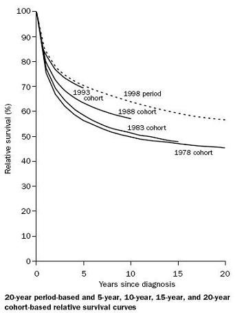

Example: Cumulative Incidence - SEER Program
Lead Author(s): Jeff Martin, MD
Long-Term Survival - NCI SEER Program
In the following example from Brenner, the researchers looked at cancer mortality in the nationwide NCI (National Cancer Institute) SEER (Surveillance, Epidemiology, and End Results) program. 
Analysis SEER Data
Analysis of data from National Cancer Institute's
- Follow-up of Diagnoses 1978 through 1998 (SEER program):
Overall survival cohort method = 40% at 20 years
Overall survival with period analysis allowing for Temporal Trend
- Changes in survival in recent calendar periods = 51% at 20 years
They estimated that improvements in survival in more recent years would have resulted in a 20-year cumulative incidence of 51% survival rather than the 40% that the registry data actually show.
Analyzing Data by Calendar Time Cohorts
This example shows how the data were analyzed by calendar time cohorts.
The analysis of biases in the cumulative incidence rates was performed by dividing the persons into 5-year cohorts based on the time period of their cancer diagnosis.
- This uses all cancer types in the SEER database.
Done this way each more recent 5-year cohort has a 5-year shorter total follow-up time, but a clear trend toward overall improved survival appears.
- The top dotted line for the 1998 cohort is an extrapolation out to 20-years as there was at the time of the analysis no follow-up data on this group.
- So the estimate for the overall improvement in 20-year survival is the difference
- between the extrapolation of 1998 to 20 years
- versus the actual 20-year follow-up on the 1978 cohort.
References
Brenner, H. (2002). Long-term survival rates of cancer patients achieved by the end of the 20th century: a period analysis. Lancet, 360 (9340), 1131-1135.